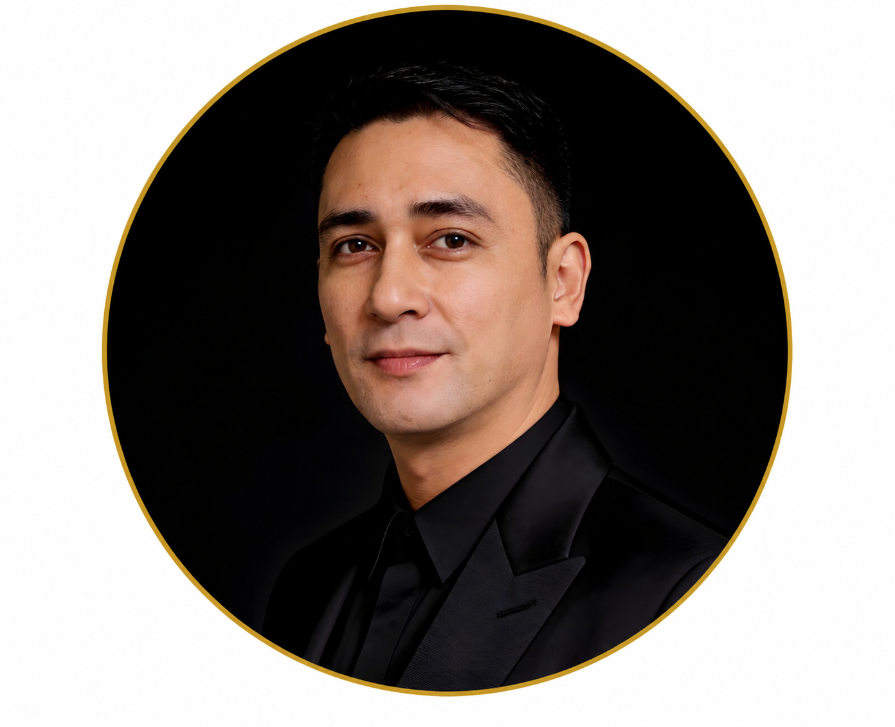

Macronutrients — Stage-by-Stage
Understanding why the targets change at each stage helps you follow them more accurately — and helps you recognize when something is wrong.
Protein
| Stage / Modality | Target (g/kg IBW/day) | Rationale |
|---|---|---|
| Stage 1–3a | 0.8 g/kg | Standard healthy adult intake; restriction not yet beneficial |
| Stage 3b–5 (non-dialysis) | 0.6–0.8 g/kg | Reduces urea production, PTH drive, and acid load; slows GFR decline. With keto-analogues, 0.3–0.4 g/kg may be used under close supervision. |
| Hemodialysis (HD) | 1.0–1.2 g/kg | Each session removes 6–12 g amino acids; needs increase substantially. Target 50%+ high biological value (HBV) protein. |
| Peritoneal Dialysis (PD) | 1.2–1.5 g/kg | Peritoneum loses 5–15 g protein/day; highest CKD protein requirement. HBV sources essential. |
The most common dietary error in CKD: continuing pre-dialysis restriction after starting dialysis
Patients who restricted protein appropriately before dialysis often continue the same restriction once on HD. This causes protein-energy wasting — the leading cause of malnutrition and death in dialysis patients. When you start dialysis, your protein target increases, not decreases.
Carbohydrates & Fat
Carbohydrates
45–65% of total calories. In CKD with diabetes, complex carbohydrates (brown rice, oats, camote) are preferred over simple sugars. Filipino staples like steamed rice and root vegetables are appropriate in moderate portions — portion control matters more than carbohydrate restriction in most CKD patients.
Fat & Omega-3
CKD patients have 5–10× higher cardiovascular risk than the general population. Emphasize monounsaturated fats (olive oil, avocado) and Omega-3 (bangus, tulingan, sardines in oil). Reduce saturated fat (<7% of calories). Omega-3 at 1.8–3.4 g/day (EPA+DHA) is supported by KDIGO for cardiovascular protection in CKD.
Minerals & Electrolytes — Why CKD Changes Everything
>| Mineral | Healthy Adult (USDA) | CKD Target | Key Reason for Change |
|---|---|---|---|
| Sodium | 1,500–2,300 mg | <2,300 mg all CKD; <2,000 mg on dialysis | Sodium drives hypertension, fluid retention, and inter-dialytic weight gain. Every 1 g excess sodium = ~200 mL extra fluid retained. |
| Potassium | 3,400 mg | Unrestricted Stage 1–3a; 2,000–3,000 mg Stage 3b–5; 2,000 mg HD/PD | Kidneys cannot excrete potassium adequately as eGFR falls. Hyperkalemia (K>6.5) causes fatal arrhythmia — the leading acute cause of dialysis-related cardiac death. |
| Phosphorus | 700 mg | 800–1,000 mg all stages; tighter with elevated serum P | Phosphorus drives PTH elevation, vascular calcification, and FGF-23 excess — a triad that kills dialysis patients. Binders required at most meals if dietary restriction insufficient. |
| Calcium | 1,000 mg | Total ≤1,500 mg (dietary + binders) KDIGO 2024 | Excess calcium from binders contributes to vascular calcification. Calcium-based binders (CaCO₃) counted toward the 1,500 mg total. |
| Magnesium | 420 mg | Generally maintained; monitor if using antacids | Accumulates in ESKD; excess causes neuromuscular depression. Avoid magnesium-containing antacids and laxatives. |
| Iron | 8 mg (M) / 18 mg (F) | Supplement if ferritin <200, TSAT <20% on dialysis | CKD causes iron-restricted erythropoiesis due to hepcidin excess. IV iron (Ferrofer) preferred on dialysis — oral iron poorly absorbed with high hepcidin. |
Filipino food and hidden sodium — the biggest practical challenge
- Patis (fish sauce): ~1,400 mg sodium per tablespoon — a single serving exceeds safe daily limit for dialysis patients
- Bagoong, alamang, soy sauce, instant noodle sachets: all extremely high-sodium
- Canned goods labeled "reduced sodium" still contain 400–600 mg per serving
- Strategy: cook from scratch, use calamansi and herbs for flavor, reduce patis/toyo by 75%, eliminate instant noodles entirely
Vitamins in CKD — Not the Same as for Healthy Adults
The USDA DRI values for vitamins apply to healthy adults. CKD changes absorption, metabolism, and toxicity thresholds for many vitamins. Some must be supplemented more than usual; others must be actively avoided.
🔼 Vitamins that are commonly depleted in CKD — supplement
Vitamin D (cholecalciferol): Deficiency near-universal in Filipinos with CKD. Target 25-OH vitamin D 30–60 ng/mL. Supplement with D-Cure 25,000 IU weekly.
Renal B-complex (B1, B2, B6, B12, folate): Water-soluble vitamins are removed by dialysis every session. Standard multivitamins are insufficient — use a renal-specific B-complex. Folate 1 mg/day reduces homocysteine, a cardiovascular risk factor in CKD.
🔽 Vitamins that accumulate in CKD — do NOT supplement
Vitamin A: Accumulates in CKD — supplementation causes toxicity (hypercalcemia, bone pain, liver damage). Avoid all supplements containing retinol above baseline RDA. Carotenoids from food (vegetables) are safe.
Vitamin C: Limit to <100 mg/day in CKD. Excess vitamin C metabolizes to oxalate — causing oxalate deposits in kidneys and soft tissues. Standard supplements (500–1000 mg) are dangerous in CKD.
Never take these over-the-counter supplements without nephrologist clearance in CKD
- Herbal supplements / barley grass / wheatgrass / moringa powders: Often high in potassium, phosphorus, or oxalate — can cause fatal hyperkalemia in dialysis patients
- High-dose Vitamin C (>100 mg/day): Oxalate nephropathy
- Vitamin A / Retinol supplements: Accumulates to toxic levels in CKD
- Vitamin K2 supplements: Emerging evidence in CKD but also potential vascular calcification interactions — discuss with nephrologist first
- Buko juice, banana heart supplements, coconut water concentrate: Very high potassium — fatal in anuric dialysis patients
Nutrition Assessment Tools
Start here. Use these validated tools to identify malnutrition risk before calculating your nutrient targets. SNAQ (quick 3-question screen), MIS (10-item scored assessment), and SGA (clinician-administered global rating). Your screening result will help interpret the personalized targets in Step 2.
Reference: Kruizenga HM et al. Clin Nutr 2005;24(1):75–82. SNAQ validated for hospitalized patients; adapted for CKD screening.
Reference: Kalantar-Zadeh K et al. Am J Kidney Dis 2001;38(6):1251–1263. MIS validated for maintenance hemodialysis patients. Score range 0–30.
References: Detsky AS et al. JPEN J Parenter Enteral Nutr 1987;11(1):8–13. Steiber A et al. J Ren Nutr 2004;14(1):1–7 (CKD validation).
Enter Your Profile
After completing Step 1, enter your profile below to calculate your personalized daily nutrient targets. Dietary requirements in CKD change dramatically by stage — what is correct for Stage 2 may be harmful at Stage 4. This calculator applies NKF KDOQI 2020 and KDIGO 2024 equations to your specific profile. If Step 1 flagged moderate or high malnutrition risk, your nephrologist or renal dietitian should review these targets before you make any dietary changes. Always confirm targets with your nephrologist and renal dietitian.
Your Nutrition Prescription Calculator
Results are computed locally — no data is stored or transmitted.
| Nutrient | Recommended / Day | Upper Limit | CKD Note |
|---|
| Mineral | Recommended / Day | Upper Limit | CKD Note |
|---|
| Vitamin | Recommended / Day | Upper Limit | CKD Note |
|---|
⚠ Vitamin Cautions Specific to CKD
Clinical Priorities for Your Stage
Putting Your Results into Daily Practice
You now have two sets of data: your malnutrition risk level from Step 1 and your personalized daily nutrient targets from Step 2. Use the guidance below to translate both into action.
If Step 1 shows moderate or high malnutrition risk
Do not self-adjust your diet before speaking with your nephrologist or renal dietitian. A low albumin (<3.5 g/dL) or MIS ≥ 6 means your body needs nutritional support beyond standard targets. Your Step 2 protein target may need to be increased, and oral nutritional supplements or intradialytic parenteral nutrition (IDPN) may be indicated.
How to hit your Step 2 protein target with Filipino food
High biological value (HBV) sources: itlog (1 large = 6 g), bangus fillet (100 g = 20 g), tilapia (100 g = 20 g), manok (100 g = 25–30 g), tofu (100 g = 8 g). On HD, aim for 1–2 HBV servings per meal. On pre-dialysis restriction, 1 small serving of meat or fish per meal is usually the target. Use your Step 2 protein number as your daily ceiling.
Leaching — reducing potassium when Step 2 flags restriction
If your Step 2 results show a potassium restriction: peel and cut vegetables small → soak in a large volume of water for at least 2 hours → drain completely → boil in fresh water → drain again before eating. This reduces potassium by 30–50%. Do NOT drink the soaking or cooking water. Applicable to kamote, kalabasa, patatas, saging na saba.
Reading labels for hidden phosphorus additives
If Step 2 flags phosphorus restriction, inorganic phosphate additives (absorbed 90–100%) are far more dangerous than natural food phosphorus (absorbed 40–60%). Look for: "sodium phosphate," "calcium phosphate," "disodium phosphate," "phosphoric acid" in ingredient lists. Common in processed meats, instant noodles, cheese spreads, canned goods, and flavored drinks.
Managing fluid between dialysis sessions
If your Step 2 results include a fluid restriction, inter-dialytic weight gain should not exceed 1 kg/day (max 2–3 kg per 2-day interval). Front-load fluids in the morning. Count all liquids: soup, sabaw, ice, jelly, gulaman, watermelon. Suck on ice chips instead of drinking water — the volume is much smaller. Salt restriction is the single most powerful way to reduce thirst.
Using your 7-day meal plan from Step 2
The prototype meal plan generated in Step 2 is calibrated to your CKD stage, allergen restrictions, and clinical modifiers (hyperkalemia, hyperphosphatemia, dialysis). Print or download it to bring to your next clinic visit. Review it with your renal dietitian to adapt portions to your actual body weight and lab trends. It is a starting framework — not a fixed prescription.
Bring both your Step 1 and Step 2 results to your next appointment
Your SNAQ, MIS, or SGA score from Step 1 alongside your DRI targets and 7-day meal plan from Step 2 give your nephrologist and renal dietitian a complete nutritional picture. Targets shift as kidney function changes — repeat both tools every 3–6 months or after any significant lab change (albumin, eGFR, serum K/P).
The Philippine FNRI RENI (Recommended Energy and Nutrient Intakes, 2015) is the most locally relevant dietary reference standard — calibrated to Filipino body weights, activity levels, and dietary patterns. For healthy Filipinos, RENI is the more appropriate baseline.
However, this calculator is designed specifically for Filipinos with chronic kidney disease. RENI does not provide CKD-specific guidance — it is a reference for healthy adults. The modifications that protect a damaged kidney (protein restriction by stage, phosphorus limits, potassium management, fluid restriction for dialysis patients) are derived from KDIGO 2024 and NKF KDOQI 2020, which are the international evidence-based guidelines governing nephrology practice worldwide — including in the Philippines, where PSN (Philippine Society of Nephrology) adopts KDIGO as its primary clinical framework.
In practice, the targets in this calculator reflect what a Filipino nephrologist or renal dietitian would prescribe: KDIGO-modified CKD targets applied to typical Filipino body weights (reference weight ~55 kg for adult females, ~60 kg for adult males) rather than the heavier US reference weights. If you would like a complete RENI-based nutritional assessment for a family member without kidney disease, please consult a registered nutritionist-dietitian.
Ideal & Adjusted Body Weight Calculator
CKD nutrition prescriptions usually set protein and energy targets per kilogram of ideal or adjusted body weight — not actual weight — so that an obese patient is not over-prescribed protein and a very thin patient is not under-fed. Enter your sex, height, and actual weight to estimate your Devine ideal body weight (IBW), adjusted body weight (used in obesity), and BMI, and to see which "dosing weight" your dietitian would likely use to set your 0.6–0.8 g/kg/day protein target.
⚕ IBW (Devine 1974): men = 50 + 2.3 × (height in inches − 60) kg; women = 45.5 + 2.3 × (height in inches − 60) kg. Adjusted body weight = IBW + 0.4 × (actual − IBW), used when actual weight exceeds 1.2 × IBW. BMI categories shown are WHO; Asian-Pacific cut-offs are lower (overweight ≥23, obese ≥25). IBW-based dosing is a starting guide only — your nephrologist and renal dietitian must individualize protein and energy targets using your labs, dialysis status, and nutritional assessment.

W Rivero, MD, FPCP, DPSN
Specialist in Internal Medicine, Nephrology, and Clinical Nutrition. Practicing integrative and evidence-based nephrology across Quezon City, Pampanga, and Bulacan.